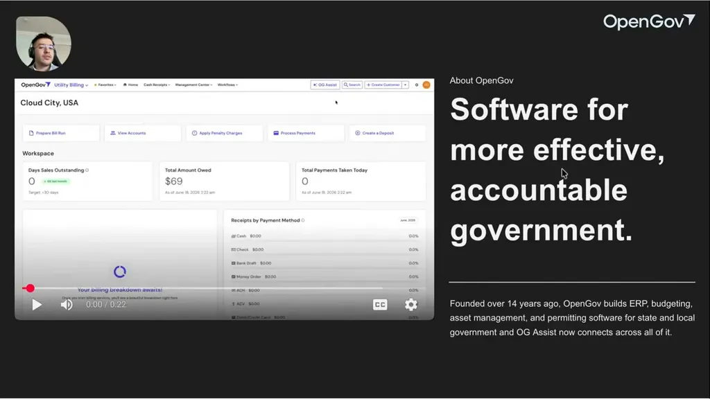
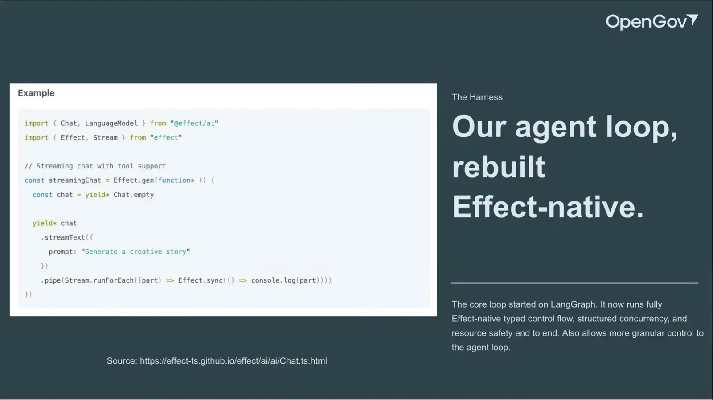
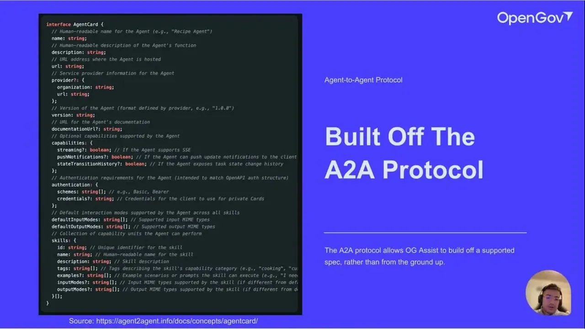
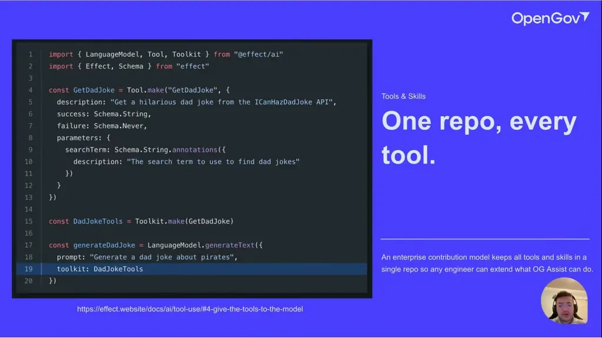
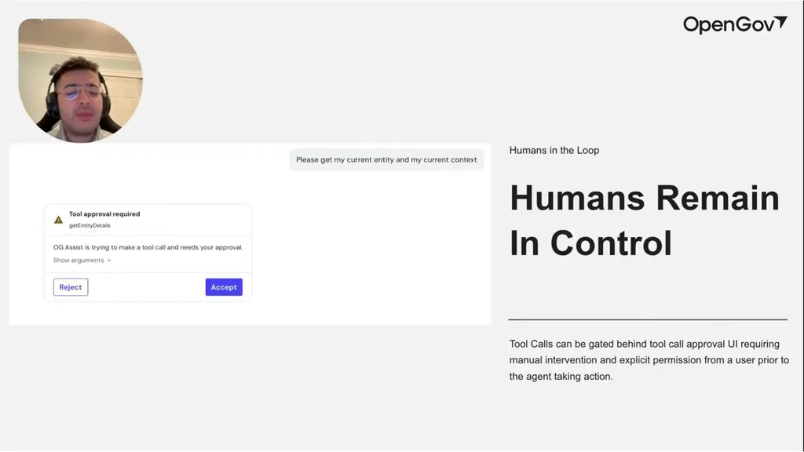
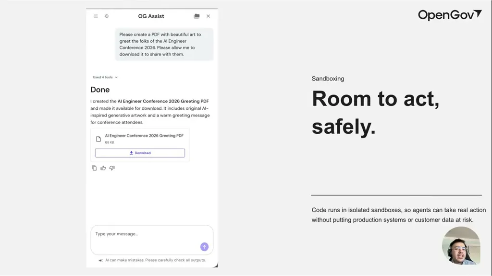
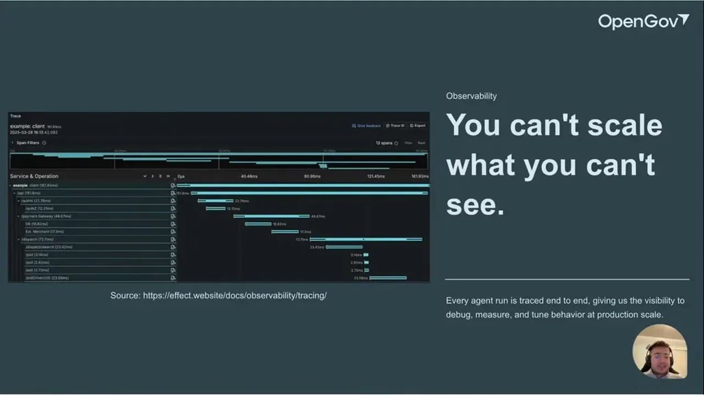

Agents in Production: How OpenGov Built and Scaled OG Assist
OpenGov OG Assist runs on a custom Effect agent loop, A2A protocol routing, human-in-the-loop tool approval, sandboxed execution, and rolling summarization for long context.
If you only read one thing
- OpenGov moved OG Assist off LangGraph onto a custom Effect-native agent loop to get full control over the loop plus Effect's built-in tracing, structured concurrency, and logging.
- Production safety is enforced via deterministic human-in-the-loop tool-call approval (accept/reject on mutating operations) and sandboxed, ephemeral execution environments for code/file generation.
- Long context is handled with rolling summarization rather than always stuffing the most recent N messages, letting the agent recall context from much earlier in a long conversation on request.
This traces OG Assist's request path from screen-aware chat through A2A routing, tool/skill resolution, human approval, and sandboxed execution, with rolling summarization, tracing, and evals as supporting mechanisms across the loop (ours).
Why this talk is a blueprint, not a take (ours)
Scope: A customer-facing embedded assistant across one company's ERP product suite (budgeting, procurement, asset management, permitting), covering the agent loop, tool routing, safety controls, and long-context handling; not a description of any specific domain skill's accuracy.
A production agent loop rebuilt on Effect for full control, tracing, and structured concurrency, routed with the A2A protocol so multiple product teams can register their own tools under a shared contract. Safety comes from deterministic human approval on mutating tool calls plus ephemeral sandboxed execution, and long conversations stay coherent through rolling summarization rather than a fixed recent-message window.
Prerequisites the talk implies:
- Willingness to move off an off-the-shelf framework (here, LangGraph) onto a custom loop once use cases outgrow it, which means owning that loop's maintenance
- A shared agent-routing contract (the talk uses Google's A2A protocol) so separate product teams can register tools and skills consistently
- Sandbox infrastructure that can spin up and tear down isolated, ephemeral execution environments on demand
- A CI pipeline that can run automated evals against real completions, plus a lightweight in-product feedback mechanism (thumbs up/down)
What the talk does not say:
- No numbers on tool-call approval rates, how often humans reject a proposed action, or how long approvals take
- No cost or team-size figures for building and maintaining the custom Effect-native loop versus staying on LangGraph
- No accuracy or error-rate figures for the automated evals or for rolling summarization's memory recall
- No detail on how sandbox provisioning is resourced or how long a sandbox typically stays alive before teardown
If you were to replicate one thing first: Stand up one shared agent-routing contract (an A2A-style agent card with name, description, and capabilities) before building any custom agent loop, so multiple teams can register tools against the same spec from day one.
| Component | What it does (from the talk) | Evidence | Slide |
|---|---|---|---|
| OG Assist UI | Chat button embedded in every product's nav bar; can see what is on screen and take action, e.g. highlighting a next step | c1 · 04:09 |  |
| Effect-native agent loop | Custom loop rebuilt off LangGraph for full control, giving tracing, structured concurrency, and logging throughout | c2 · 05:41 |  |
| A2A agent router | Defines agent routes on the back end using Google's Agent2Agent protocol and its agent-card schema (name, description, capabilities) | c4 · 08:20 |  |
| Tool and skill toolkits | Each product suite registers its own tools into a toolkit consumed by the language model via the Effect AI package | c3 · 06:13 |  |
| Human-in-the-loop approval | Deterministically interrupts the loop and shows an accept/reject UI before a mutating tool call executes | c6 · 10:34 |  |
| Sandbox execution | Runs agent-generated code and file creation in an ephemeral, isolated sandbox torn down after use | c7 · 11:25 |  |
| Rolling summarization | Summarizes after N messages instead of only keeping the most recent ones, preserving recall of much earlier context on request | c8 · 12:38 |  |
| Effect tracing | Auto-tagged spans on Effect functions feed end-to-end traces used to debug, profile, and cross-reference failures across services | c10 · 15:03 | |
| CI evals and feedback | Thumbs up/down plus automated evals run in CI against real completions to check whether the agent called the correct tools | c5 · 09:53 |
What OG Assist is
- OG Assist is a chat button embedded in the navigation bar across OpenGov's ERP product suite (budgeting, procurement, asset management, permitting), where each product team has built its own tools and skills to power domain-specific answers, such as looking up utility billing rate codes.
- The agent can also see and act on what's currently on screen, e.g. highlighting clickable next steps.
“I'm asking the agent here, "Hey, hey, what's on the screen? Can you maybe highlight uh some of the next steps that I could take?"”
said at 04:09Moving from LangGraph to a custom Effect-native loop
- The team originally built OG Assist on LangGraph but moved to their own Effect-native agent loop as use cases scaled, to get full control over the loop's behavior for complex features.
- Effect is an open-source TypeScript library providing schema validation, error handling, logging, and tracing, and the team credits it with providing tracing and structured concurrency throughout the entire agent loop.
“originally we were on LangGraph and that was fine until the team really started to scale uh and our use cases started to evolve. So, we decided to move over to our own kind of Effect Native Agent Loop”
said at 05:41“all the cool things you get with Effect is now propagated throughout the entire Agent Loop, like the tracing, structured concurrency, the logging”
said at 06:13A2A protocol for agent routing
- OpenGov adopted Google's Agent2Agent (A2A) protocol to define agent routes on the back end, including an 'agent card' schema with name and description fields.
- Following this spec gave front-end and back-end teams a shared contract, and A2A's extension mechanism (including A2UI) let them add metadata as needed.
“having this kind of rigorous protocol, this rigorous spec really helped drive our development and drive alignment because, you know, all we had to do was um align with this spec”
said at 08:20Feedback loops and human approval
- Feedback comes from a thumbs up/down mechanism plus automated evals run in CI against real completions, checking whether the agent called the right tools.
- Separately, a human-in-the-loop mechanism deterministically interrupts the agent loop when a tool call needs approval, surfacing an accept/reject UI, particularly for mutating operations.
“we also have automated evals, so in in the in our CI we we have evals that run against real completions, so we could test the prompt against, "Hey, did it hit some tools?”
said at 09:53“this is a really cool feature we built where we deterministically interrupt the agent loop if there is a tool call approval required”
said at 10:34Sandboxing and long context
- When an agent executes code or creates files (e.g. generating a PDF), it does so in an ephemeral, isolated sandbox that is torn down afterward, so production systems carry no risk from agent-generated code.
- For long conversations, the team found rolling summarization after N messages more effective than always including only the most recent messages, since it preserves recall of context from much earlier in the thread.
“whenever an agent tries to execute code or tries to create files, it does so in a sandbox”
said at 11:25“we found that having some sort of um rolling summarization was more effective than you know always stuffing in the latest and most recent uh messages”
said at 12:38Commentary (ours)
The talk treats Effect less as a language feature and more as an organizational bet -- tracing and structured concurrency 'out of the box' substitute for building bespoke observability tooling, which is a reasonable trade for a team scaling a single agent loop across many product surfaces, though it does tie the architecture fairly tightly to one library's ecosystem (ours).

Underlying detail — every claim, typed and timestamped (10)
| Stance | Claim | t |
|---|---|---|
| asserts | OG Assist can see what's on screen and take action on the page, such as highlighting next steps a user could click. | 04:09 |
| asserts | OpenGov moved from LangGraph to its own Effect-native agent loop to have full agency over the loop as use cases scaled. | 05:41 |
| recommends | Building the agent loop on Effect propagates tracing, structured concurrency, and logging throughout the entire loop with more fine-grained control. | 06:13 |
| recommends | Adopting Google's A2A protocol for agent routes gave front-end and back-end teams a shared contract to align development around. | 08:20 |
| asserts | Feedback is collected via thumbs up/down on responses plus automated evals in CI that check whether the agent hit the correct tools. | 09:53 |
| recommends | The agent loop deterministically interrupts and shows an accept/reject UI when a tool call requires human approval, especially for mutating operations. | 10:34 |
| asserts | Agents execute code and create files inside ephemeral, isolated sandboxes that are torn down afterward so production systems carry no risk. | 11:25 |
| recommends | Rolling summarization after N messages was more effective for long conversations than always including only the most recent messages. | 12:38 |
| asserts | The agent can build and render UI primitives like forms on the fly during a conversation, not just pull from a fixed set of screens. | 14:01 |
| asserts | Effect functions are automatically tagged with spans that feed into traces, giving drill-down visibility into agent function calls. | 15:03 |
Machine-readable copy embedded in this page (script#ontology) and in the corpus ontology.